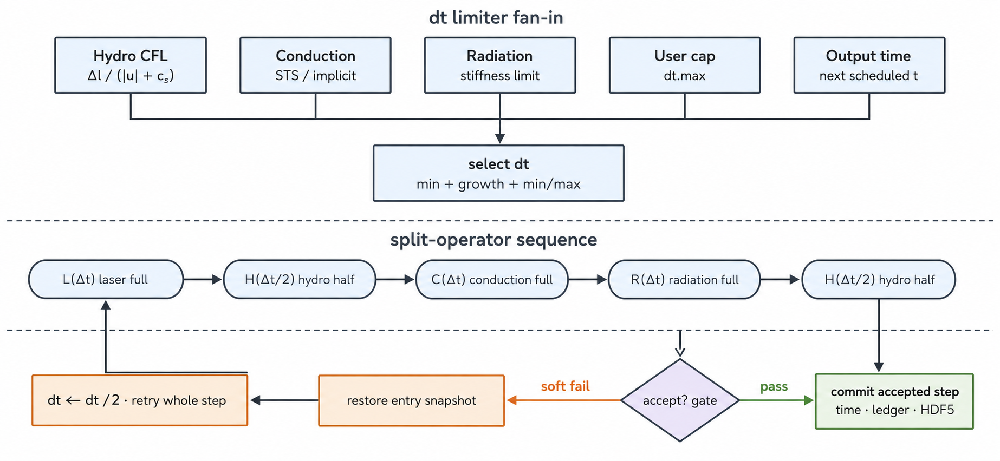

Numerical foundations reference
This page collects what every kernel shares and no single physics page owns: the frozen cgs + eV unit system, the governing equations and their closures (including electron–ion relaxation), variable placement and the conserve-by-construction design, the activity mask for low-density fill regions, operator splitting and its re-closure discipline, floors/clamps/safety guards, and the energy-ledger identity. The time-step decision rule and per-kernel CFL formulas live on the dedicated Time-step control & CFL page. The canonical equations are in docs/NUMERICS.md (§0–§2, §10–§11) in the repository.
Units and symbols
Never converting units at module boundaries is the first numerical contract. In particular, temperature \(T\) is in eV, and the \(k_B\) in \(P=nk_BT\) means eV_to_erg = \(1.6022\times10^{-12}\) erg/eV — do not confuse it with the kelvin constant \(1.3807\times10^{-16}\) erg/K. The radiation constant follows the same convention, \(a_{\rm eV}=1.3720\times10^{2}\) erg cm⁻³ eV⁻⁴, so the equilibrium radiation energy density is \(a_{\rm eV}T^4\) with \(T\) in eV. Specific heat per mass \(c_v\) [erg/(g·eV)] and per volume \(C_v=\rho c_v\) [erg/(cm³·eV)] are also kept distinct. The shared constants and overloaded symbols are collected in the nomenclature.
| Quantity / symbol | Internal unit / meaning | Accident-preventing boundary |
|---|---|---|
| \(\rho,\mathbf u,t\) | g/cm³, cm/s, s | Mesh geometry also uses cm and cm³. |
| \(T_i,T_e,\epsilon_g\) | eV | Temperatures and photon group edges \(\epsilon_g\) share one energy axis. |
| \(E_g\) | group-integrated radiation energy density, erg/cm³ | Do not confuse with the eV group edges \(\epsilon_g\); same subscript g, different quantity. |
| \(e_i,e_e,P\) | erg/g, dyne/cm² | Do not confuse specific and volumetric energies. |
| \(\kappa_{P,g},\kappa_{R,g}\) | mass opacities, cm²/g | Table values; never hand them to transport directly. |
| \(\sigma_{a,g}=\rho\kappa_{P,g}\) | length opacity, cm⁻¹ | Swapping \(\kappa\) and \(\sigma\) shifts absorption lengths by a factor of \(\rho\). |
| \(c_v,\ C_v\) | specific heat per mass, per volume | \(C_v=\rho c_v\); swapping them shifts coefficients by \(\rho\). |
Governing equations and closures
The fluid solves Lagrangian single-fluid motion with two-temperature internal energies. Mass conservation and momentum for the material derivative \(D/Dt\) are
$$ \frac{D\rho}{Dt}=-\rho\nabla\!\cdot\mathbf u, \qquad \rho\frac{D\mathbf u}{Dt} =-\nabla(P_i+P_e+Q)+\mathbf f_{\mathrm{geom}}. $$Here \(Q\) is the artificial-viscosity pressure and \(\mathbf f_{\mathrm{geom}}\) the coordinate-geometry term. The v1.0 momentum equation contains no radiation force. The ion and electron specific internal energies obey
$$ \rho\frac{De_i}{Dt}=-(P_i+Q)\nabla\!\cdot\mathbf u+Q_{ei}+S_i, $$ $$ \rho\frac{De_e}{Dt}=-P_e\nabla\!\cdot\mathbf u -\nabla\!\cdot\mathbf q_e-Q_{ei}+S_e+S_L+S_r. $$\(\mathbf q_e\) is the electron heat flux, \(S_L\) the laser deposition, and \(S_r\) the radiation exchange. Sign convention: \(Q_{ei}>0\) means energy flowing from electrons to ions, i.e. ion heating. The same \(Q_{ei}\) appears in both equations with opposite signs, so in-cell exchange alone never changes the total matter energy.
Electron–ion relaxation \(Q_{ei}\)
The exchange term at the heart of the two-temperature model closes with Spitzer–Braginskii collisional relaxation:
$$ Q_{ei}=\frac{C_{v,e}\,(T_e-T_i)}{\tau_{eq}}\ \ [\mathrm{erg/cm^3/s}], \qquad \tau_{eq}=\frac{A\,m_p}{2\,m_e}\,\tau_e, $$ $$ \tau_e=\frac{3.44\times10^{5}\;T_e[\mathrm{eV}]^{3/2}} {n_e[\mathrm{cm^{-3}}]\;\bar Z\;\ln\Lambda_{ei}}\ \ [\mathrm s], \qquad \tau_{eq}=\frac{3.16\times10^{8}\;A\;T_e[\mathrm{eV}]^{3/2}} {\bar Z^{2}\;n_i[\mathrm{cm^{-3}}]\;\ln\Lambda_{ei}}\ \ [\mathrm s]. $$The term relaxes the temperature difference \(T_e-T_i\), weighted by the electron heat capacity, on the equilibration time \(\tau_{eq}\). Because a single collision transfers only a fraction of order \(m_e/m_i\) of the energy, \(\tau_{eq}\) is the electron collision time \(\tau_e\) multiplied by \(Am_p/(2m_e)\); the right-hand expression packages this in cgs+eV. The \(T_e^{3/2}\) dependence makes relaxation slow in hot plasma, so the corona keeps its electron and ion temperatures separated for a long time. The formula is the ICF-regime approximation \(T_e\gg(m_e/m_i)T_i\), and it is consistent with the sign convention: \(T_e>T_i\) gives \(Q_{ei}>0\) (ion heating). It is applied inside each hydro half-step's corrector, and the subsequent conduction operator receives the \(Q_{ei}\)-updated \(T_e\) as its initial value.
Discretizing the divergence; cell mass
The Lagrangian discretization never differences \(\nabla\!\cdot\mathbf u\) independently: it evaluates it as the cell volume rate, \((\nabla\!\cdot\mathbf u)_c=\dot V_c/V_c\). In 1D spherical symmetry, \(\dot V_i=A_{j+1}u_{j+1}-A_ju_j\) with \(A_j\) the shell-boundary areas. The continuity equation is exactly the cell version of this identity, and the cell mass \(\Delta M_c=\rho_cV_c\) stays constant by construction.
The radiation transport equation
For group \(g\), the continuous transport equation for the radiance \(I_g(\mathbf r,\mathbf\Omega,t)\) and the exchange term entering the electron energy equation are
$$ \frac{1}{c}\frac{\partial I_g}{\partial t} +\mathbf\Omega\!\cdot\nabla I_g =\sigma_{a,g}B_g(T_e)-\sigma_{t,g}I_g+\mathcal S_{\mathrm{sca}}, $$where \(B_g(T_e)\) is the group Planck function, \(\sigma_{t,g}=\sigma_{a,g}+\sigma_{s,g}\) the total extinction, and \(\mathcal S_{\mathrm{sca}}\) the scattering source (zero in v1.0, below):
$$ S_r=\sum_g c\,\sigma_{a,g} \left[E_g-a_{eV}T_e^4 b_g(T_e)\right]. $$\(b_g(T_e)\) is the per-group Planck fraction, normalized to sum to one. \(S_r>0\) is net heating of electrons by the radiation field. Production v1.0 carries no physical scattering: \(\sigma_{s,g}=0\) in every cell and group — the namelist accepts a per-material kappa_s for forward compatibility, but the v1 production solvers do not consume it as physical scattering (the Fleck effective scattering \((1-f)\sigma_a\) on the FLD page is an implicitness device, not physics). Radiation forces are diagnostic-only.
Variable placement and conservation by construction
Variable placement is shared by every kernel. Thermodynamic state — density, ion/electron specific internal energies, temperatures, pressures, artificial-viscosity pressure, material volume fractions — lives at cell centers; kinematics — positions and velocities — live at nodes. 1D nodes are shell boundaries; 2D RZ nodes are quadrilateral corners. The primary evolved variables are the conserved quantities (mass, momentum, energy); temperatures and pressures are derived by the EOS. The HDF5 mesh/ and hydro/ dataset names map 1:1 to these internal State fields (Outputs & analysis).
The conservation policy is "write it in a form that cannot break", not "fix it afterwards". What guarantees what, and where, is summarized below; details live on the kernel pages.
| Conserved quantity | Constructive mechanism | Details |
|---|---|---|
| Mass | Under pure Lagrangian motion the cell mass \(\Delta M_c\) is invariant by definition; density only changes through the reconstruction \(\rho=\Delta M/V\). | this page, above |
| Momentum and total energy (hydro) | Compatible (adjoint-pair) construction: corner forces and \(p\,dV\) work built from the same geometric vectors \(\mathbf S_{c,k}\). | Lagrangian hydrodynamics |
| Remap (ALE) | Transfers cell-integrated quantities, not intensives, with one flux per face applied with opposite signs. | ALE |
| Radiation ⇄ matter | The actually-applied source \(S^{used}\) is frozen and reused in the matter balance; shared-face contributions cancel exactly. | FLD · SN |
| Laser | Every call closes incident = absorbed + unabsorbed exactly; the termination taxonomy assigns residuals. | Laser |
| Conduction, viscosity, burn | Sign-flipped face fluxes (conduction, viscosity); the released = deposited + escaped + in-flight ledger (burn). | kernel pages |
What still leaks — floor injections, rounding, algorithmic limits — is not hidden: it is quantified every step by the energy ledger below.
The activity mask for low-density fill (hydro_active)
Treating a low-density fill region (the vacuum stand-in) as ordinary matter creates meaningless sound waves and extreme CFL limits. Each cell therefore carries a hydro activity flag, hydro_active. Inactive cells contribute zero pressure and artificial-viscosity forces, and their coordinates and velocities stay fixed; a node moves if any adjacent cell is active (OR propagation). An inactive cell activates when its temperature reaches the activation threshold, at which point its density and internal energy are recomputed from the current volume — the volume may already have changed through neighboring active nodes, and this keeps the first post-activation PdV work continuous. The CFL minimum runs over active cells only, and with every cell inactive, hydro drops out of the time-step ladder entirely (Time-step control).
Usage constraint (important). This is a numerical mask for statically holding low-density fill (\(\rho\ll\rho_{shell}\)); it must not be used to suppress the motion of dense matter by temperature conditions. An inactive cell is in a one-sided mechanical state — it can be moved but pushes nothing back — which is acceptable for fill regions but injects or destroys unphysical energy and momentum when applied to dense material. Excluding cells from conduction and radiation coupling is a separate mechanism, the void contract (cell_is_void, EOS, opacity & ionization).
Operator splitting and the re-closure discipline
One outer step is the map below; composition acts right to left, so the execution order is \(\mathcal L\), \(\mathcal H/2\), \(\mathcal C\), \(\mathcal R\), \(\mathcal H/2\):
$$ \mathcal U^{n+1}= \mathcal H_{\Delta t/2}\circ \mathcal R_{\Delta t}\circ \mathcal C_{\Delta t}\circ \mathcal H_{\Delta t/2}\circ \mathcal L_{\Delta t}(\mathcal U^n). $$\(\mathcal H\) is Lagrangian hydro with boundary conditions (each half-step's corrector includes \(Q_{ei}\)), \(\mathcal C\) electron conduction, \(\mathcal L\) ray trace and deposition, \(\mathcal R\) radiation transport with matter exchange. In 2D RZ, ALE rezone/remap runs conditionally only after the second hydro half-step. How the candidate \(\Delta t\) is chosen before the sequence starts is on Time-step control & CFL.
The most accident-prone part of splitting is "the next operator reading state the previous one changed through a stale closure". TENRYU closes that door by discipline: after any operator changes \(T_e\) or \(e_e\), the EOS is re-closed so no later operator reads stale \(T\), \(e\), \(P\), or \(C_v\). Under MPI, halos are exchanged right after owned regions are written and before the first ghost read (MPI decomposition); dynamic mean ionization is likewise re-evaluated at each operator's entry (EOS page).
"Strang-type" is qualified: hydro symmetrically brackets the conduction–radiation block, so that combination is symmetric. The laser runs once as a full-step external source at the head of the step, and conduction and radiation are ordered full steps relative to each other. Those couplings are first-order Lie splittings — operators simply applied in sequence — so the complete sequence is not generally second order.
This first-order coupling is acceptable because the splitting errors between the laser and the rest, and between conduction and radiation, are not the dominant error sources in ICF runs — each operator advances different physical quantities, and practical accuracy is secured by the time-step control. The fully second-order multi-stage splitting \(\mathcal H_{/2}\circ\mathcal C_{/2}\circ\mathcal L_{/2}\circ\mathcal R\circ\mathcal L_{/2}\circ\mathcal C_{/2}\circ\mathcal H_{/2}\) is recorded as a future option in the numerical contract, docs/NUMERICS.md §2.1.
Full-step retry. Choosing a smaller step in advance cannot predict every nonlinear mesh-admissibility failure. With driver-level retry enabled, the driver snapshots the state before entering the split sequence. If the hydro corrector reports a recoverable failure, the partially advanced laser, energy, radiation, and mesh states are discarded, the snapshot is restored, and the whole outer step reruns at half the step. Attempts are capped; exhausting the cap is a hard failure. Because outputs and cumulative ledgers commit only after acceptance, failed attempts are never double-counted in histories or energies.

Floors, clamps, and safety guards
Floors and clamps are not physics models. They are numerical guards against NaNs and negative temperatures destroying the whole calculation — and every intervention is counted, with injected energy booked in the ledger. "Fix it silently" is exactly what the design forbids.
- Temperature floors: \(T_e\ge T_{e,floor}\), \(T_i\ge T_{i,floor}\) (both default \(10^{-3}\) eV; individually settable via
Numerics.floorsTe_floor_eV/Ti_floor_eV). Clamps apply after each operator's temperature update — hydro, conduction, laser, radiation — and the injected energy is booked as \(\Delta E_{clamp}=\rho c_v(T_{floor}-T_{computed})V\). - Clamp-count monitoring:
clamp_countresets to zero at step start and increments on every operator clamp. More than 100 clamps per step is a WARNING, more than 10000 a FATAL (defaults). The series persists assafety/clamp_countin the history. - Opacity-table out-of-range: no extrapolation — \((\rho,T)\) is clamped into the table domain before interpolation (input clamping). Each occurrence warns, capped at 10 messages per rank per step with the rest counted.
- Energy-budget monitoring: \(\varepsilon_{budget}\le10^{-3}\) (default threshold) is checked every step. Exceedance warns by default and becomes fatal with
Numerics.safety.energy_fatal=True; NaN policy is likewise selected bynan_fatal. - Kernel-specific guards: the laser's \(\varepsilon_n\) floor and Coulomb-logarithm floor of 2, conduction's void mask and floor-protection throttle, the EOS's non-positive-\(c_v\) clamp, and others are described on their kernel pages. The shared contract: warn on firing and, where applicable, book the injection.
The energy ledger and \(\varepsilon_{budget}\)
Every step accumulates the identity that reconciles the total-energy change with the flows in and out:
$$ \Delta E_{total}=\Delta E_{int,e}+\Delta E_{int,i}+\Delta E_{kin}+\Delta E_{rad} $$ $$ =E_{laser,in}-E_{laser,esc}+E_{Marshak,in}-E_{rad,esc} -E_{pdV}^{bdry}-E_{num.loss} +E_{floor}+E_{safety}+E_{redist}+E_{solver}. $$The left side sums the electron-internal, ion-internal, kinetic, and radiation-field energy changes. The first half of the right side is the physical traffic (laser incident and unabsorbed, Marshak injection, radiation escape, boundary PdV work, numerical loss); the last four terms are artificial injections — floor corrections, the conduction safety correction, unresolved ALE redistribution, and the implicit-solver residual. The artificial terms are accumulated separately from the physical sources, and the conservation error
$$ \varepsilon_{budget}=\frac{\bigl|(\Delta E_{total}-E_{artificial})-(E_{source}-E_{sink})\bigr|}{E_{denom}}, \qquad E_{denom}=\max\bigl(E_{total}^{\,n},\,E_{source},\,10^{-20}\ \mathrm{erg}\bigr) $$excludes them from its numerator. \(\varepsilon_{budget}\) therefore measures physical conservation violation, while the artificial fractions (\(E_{floor}/E_{denom}\) etc.) are monitored independently to detect numerical safety machinery dominating a result. The denominator floor prevents division by zero and false FATALs on cold starts (total energy ≈ 0).
All of these terms appear verbatim in the history's energy/ group — laser_incident, marshak_in, radiation_escaped, pdv_boundary, floor_injected, safety_injected, conservation_error, and the rest (full enumeration on Outputs & analysis). Reading guide: when \(\varepsilon_{budget}\) jumps, look at the artificial fractions first. If they dominate, chase the floor/clamp source (which operator; the clamp_count trend); otherwise question the boundary and source attribution (absorption, escapes).
The numerical contracts at a glance
The cross-cutting promises scattered across the site, in one table. All are contracts the codebase publishes; changes pass the verification gates (Verification philosophy).
| Contract | Content | Details |
|---|---|---|
| Frozen units | Internals fixed to cgs + eV; no unit conversion at module boundaries. | this page |
| No runtime Python | Namelist callables are frozen into tables at initialization and never called in the time loop. | Running · Architecture |
| Strict input validation | Unknown keys, wrong types, and invalid combinations are errors, not warnings; defaults are canonical in the specification. | Namelist |
| Determinism | Deterministic 1D paths are bitwise run-to-run identical; only the documented 2D atomicAdd ordering is treated as a noise band. | Verification philosophy |
| Conservation ledgers | Boundary and source traffic closes in ledgers; artificial injections are booked separately. | this page · kernel pages |
| Time step | The global \(\Delta t\) is the minimum of every kernel's cap; falling below the floor is FATAL. | Time-step control |
| Output schema | Dataset names map 1:1 to State, every numeric dataset has a units attribute, compatibility is schema-versioned. | Outputs & analysis |